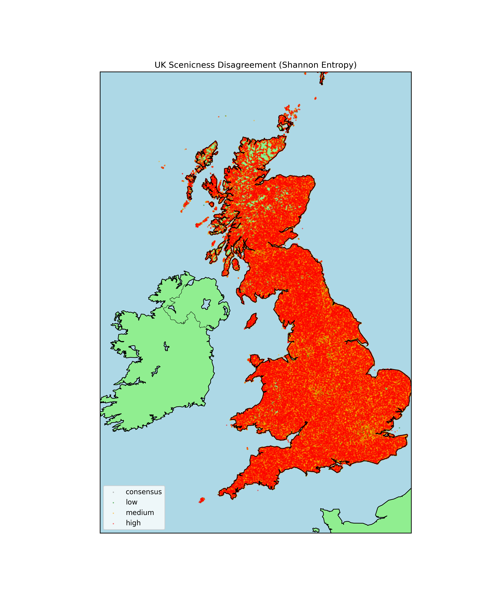

Abstract: Human perception of landscape beauty, or scenicness, is often explained through visible image characteristics such as natural elements, brightness, saturation, clarity, and overall visual quality. However, Christopher Alexander’s theory of living structure suggests that beauty may also emerge from deeper spatial patterns, including centers, boundaries, gradients, repetition, contrast, hierarchy, and local symmetry. This study proposes a computer vision framework to operationalize Alexander’s fifteen properties of living structure as measurable image features and evaluate their relationship with human scenicness ratings of landscape photographs. Quantitative structural features will be extracted from landscape images and compared with conventional image-quality measures, semantic content features, and deep neural network embeddings. Interpretable machine learning models will be used to test whether Alexander-based features improve scenicness prediction and identify which structural properties most strongly contribute to perceived beauty. In addition, the extracted fifteen-property feature representations will be used to train or condition a diffusion-based generative model, allowing the model to learn how specific structural properties influence the generation of scenic landscapes. This generative component will explore whether images guided by Alexander’s properties can produce visually coherent and aesthetically appealing landscape outputs. By translating qualitative architectural theory into computational measurements and generative modeling constraints, this research aims to bridge design theory, computer vision, and AI-based image generation. The findings may support future work in landscape evaluation, urban planning, environmental design, and interpretable generative AI systems that seek to create visually appealing environments.